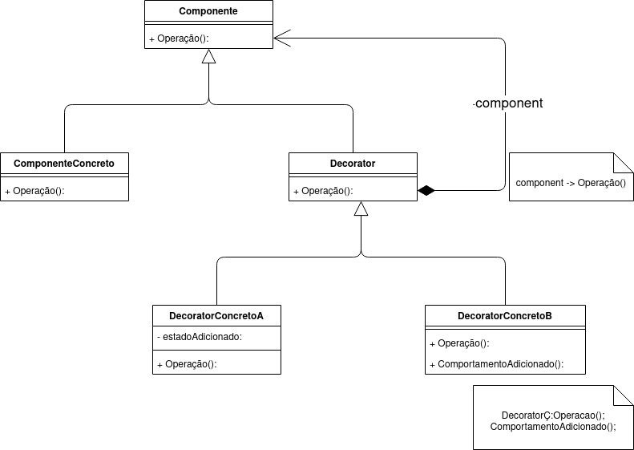
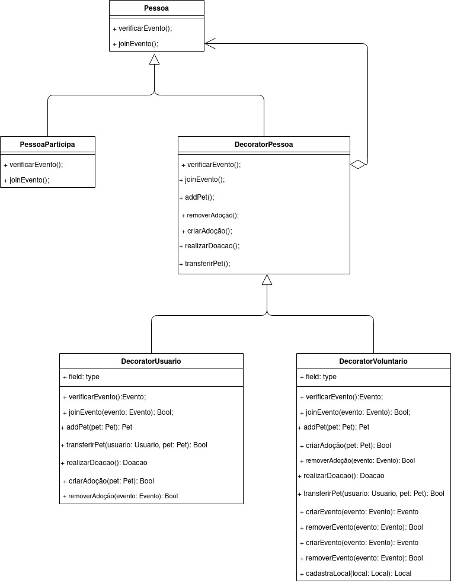
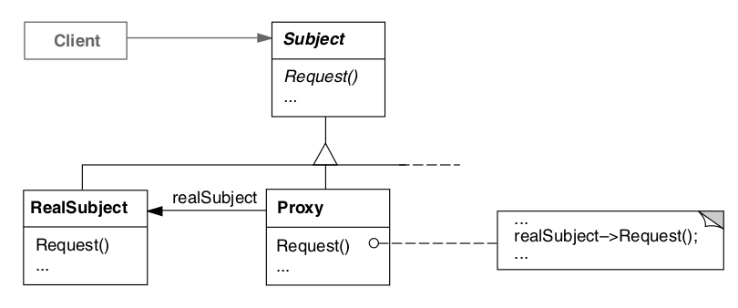
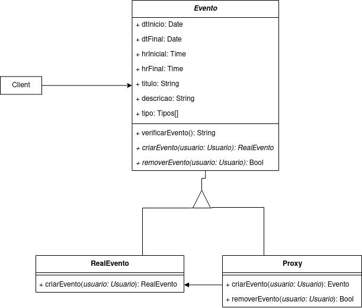

GoFs Estruturais
Os padrões GoFs de estrutura têm seu foco em como objetos e classes são compostos para formar estruturas maiores. A flexibilidade obtida pela composição dinâmica de objetos provém da capacidade de mudar a composição em tempo de execução o que não é possível com a composição estática. Visam diminuir a dependência de um sistema gerada pela interação de seus objetos, facilitando assim sua manutenção e escalabilidade.
Decorator
O padrão Decorator adiciona funcionalidades a objetos de forma dinâmica (em tempo de execução), permitindo assim a expansão do objeto de maneira mais flexível, ou seja, utilizando esse padrão nós podemos expandir uma instância sem precisar utilizar herança, somente composição, algo que é não somente recomendado na orientação a objetos como também um princípio da mesma. Basicamente o Decorator envelopa um objeto para fornecer novos comportamentos.
Pontos Positivos
- Facilidade na aplicação
- Capacidade de adicionar diversos comportamentos
- Poder adicionar e remover comportamentos em tempo de execução
Pontos Negativos
- Dificuldade na compreensão do código
- Quanto mais decorators em camadas, mais complexo seu código se torna
É possível adaptar esse padrão para o projeto?
Sim, dentro do projeto existe uma variação nas categorias do tipo de pessoa o qual irá comparecer o evento, sendo o tipo usuário o qual aproveita dos serviços ofertados e o tipo voluntário que participa trabalhando dos serviços ofertados. Dessa forma u Decorator poderá servir para implementar esses dois comportamentos.
Decorator Base

Decorator Projeto
A nível de modelagem

A nível de código
export class Pessoa{
this.verificarEvento(filters: Event): List[Event];
this.joinEvento(obj: Evento): Evento;
}
export interface DecoratorPessoa extends Pessoa {
addPet(){}
removerAdocao(): Void{}
criarAdocao(): Void{}
realizarDoacao(): Void{}
transferirPet(): Void{}
}
export class DecoratorUsuario extends DecoratorPessoa {
addPet(pet: Pet): Pet{}
removerAdocao(evento: Evento): bool{}
criarAdocao(pet: Pet): bool{}
realizarDoacao(): Doacao{}
transferirPet(usuario: Usuario, pet: Pet): Void{}
}
export class DecoratorVoluntario extends DecoratorPessoa {
criarEvento(evento: Evento): Evento{}
removerEvento(evento: Evento): Bool {}
cadstrarLocal(local: Local): Local {}
addPet(pet: Pet): Pet{}
removerAdocao(evento: Evento): bool{}
criarAdocao(pet: Pet): bool{}
realizarDoacao(): Doacao{}
transferirPet(usuario: Usuario, pet: Pet): Void{}
}
Adapter
Esse padrão de projeto permite a conversão uma inteface de uma classe existente em outra. Utilizada para permitir a comunicação entre classes que são incompatíveis (ex.: libs, plugins, códigos legado).
Pontos Positivos
- Faz com que classes possam ser reutilizadas para uma interface que o cliente requer
- Faz com que se possa introduzir novos tipos de adaptadores sem que o código fonte quebre
Pontos Negativos
- Pode aumentar a complexidade do código, pois são introduzidos novos conjuntos de interfaces e classes
É possível utilizar esse padrão para o projeto?
O esperado é que este padrão não se faça necessário, considerando que o projeto está sendo construído do início, não existem interfaces prévias.
Adapter Base
Facade
Esse padrão de projeto serve como uma interface/máscara para uma estrutra de código mais complexa. Cria pontos de entrada para determinadas partes do sistema, como serviços externos, camadas da aplicação e objetos complexos dentro em determinadas partes do código.
Pontos Positivos
- Consegue isolar o código da complexidade dos subsistemas
- As dependências dos subsistemas serão possivelmentes minimizadas
- Subsistemas são mais fáceis de serem utilizados
Pontos Negativos
- Pode se tornar um objeto deus
É possível utilizar esse padrão para o projeto?
É, porém ainda não necessária, já que o projeto não possui subsistemas complexos o suficientes para a implementação de uma fachada.
Facede Base
Proxy
O proxy controla a chamada a um objeto através de outro objeto de mesma interface.
O padrão Proxy é aplicável sempre que há necessidade de uma referência mais versátil, ou sofisticada, do que um simples apontador para um objeto. É aplicável nos seguintes contextos:
- Remote proxy: fornece um representante local para um objeto num espaço de endereçamento diferente.
- Virtual proxy: cria objetos caros sob demanda
- Protection proxy: controla o acesso ao objeto original.
- Smart reference: é um substituto para um simples pointer que executa ações adicionais quando um objeto é acessado.
Pontos Positivos
- Possibilita a inclusão de tarefas adicionais de organização (housekeeping) quando um objeto é acessado
- Ocultar o fato de que um objeto reside num espaço de endereçamento diferente.
- Criação de um objeto sob demanda.
Pontos Negativos
- Aumento da complexidade
É possível utilizar esse padrão para o projeto?
Sim. Podemos utilizar o proxy no contexto do Protection proxy para a implementação de permissões na criação de um evento.
Proxy Base

Proxy Projeto
A nível de modelagem

A nível de código
abstract class Evento {
public dtInicio: Date;
public dtFinal: Date;
public hrInicial: Date;
public hrFinal: Date;
public titulo: string;
public descricao: string;
public tipos[]: Tipo[];
verificarEvento(): String {
let res =
`O evento ${titulo} ocorrera no dia ${dtInicio} as ${hrInicial} `+
`ate o dia ${dtFinal} as ${hrFinal}, e possui os seguintes tipos:\n`;
for(int i = 0; i < tipos.length; i++)
res += `-> ${tipos[i]}\n`
return res;
}
abstract criarEvento(usuario: Usuario): RealEvento;
abstract removerEvento(usuario: Usuario): void;
}
class RealEvento extends Evento{
constructor(
public dtInicio: Date,
public dtFinal: Date,
public hrInicial: Date,
public hrFinal: Date,
public titulo: string,
public descricao: string,
public tipos[]: Tipo[]){}
}
class Proxy extends Evento{
#evento: RealEvento
public criarEvento(usuario: Usuario): RealEvento{
if(usuario.voluntario === True)
{
evento = new RealEvento(
public dtInicio: Date,
public dtFinal: Date,
public hrInicial: Date,
public hrFinal: Date,
public titulo: string,
public descricao: string,
public tipos[]: Tipo[]);
return evento;
}
}
public removerEvento(usuario: Usuario): Bool{
if(usuario.voluntario === True)
{
delete evento;
return true;
}
return false;
}
}
Versionamentos
| Data | Versão | Descrição | Autor |
|---|---|---|---|
| 08/09/2021 | 0.1 | Criação do documento | Pedro Vítor de Salles Cella |
| 08/09/2021 | 0.2 | Adição do Decorator | Pedro Vítor de Salles Cella |
| 11/09/2021 | 0.3 | Adição do Adapter | Paulo Gonçalves Lima |
| 14/09/2021 | 0.4 | Adição do Facade | Paulo Gonçalves Lima |
| 16/09/2021 | 0.4.1 | Revisão e adição textual | Arthur Sena e Gabriela Pivetta |
| 16/09/2021 | 0.5 | Adição do nível de código do Decorator | Paulo Gonçalves Lima, Pedro Vítor de Salles |
| 20/09/2021 | 0.6 | Adição do Proxy | Antonio Ruan |
Referências
- Gamma, Erich. et al. Padrões de Projeto: Soluções reutilizáveis de software orientado a objetos. 1ª Edição. Porto Alegre: Bookman, 2007.
- Playlist Sobre Padrões de Projeto
- Wikipedia, Padrões de Projeto
- Wikipedia, Adapter Pattern
- Wikipedia, Facade Pattern
- Refactoring Guru Adapter
- Refactoring Guru Facade
- Macoratti
- Dev Media
- Grupo Stock